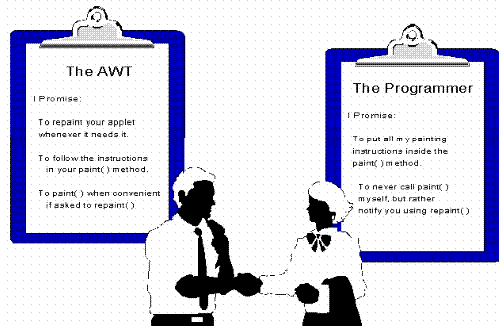
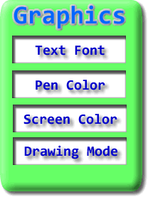
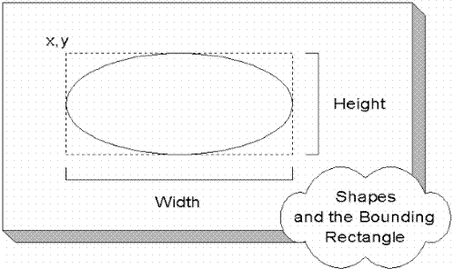
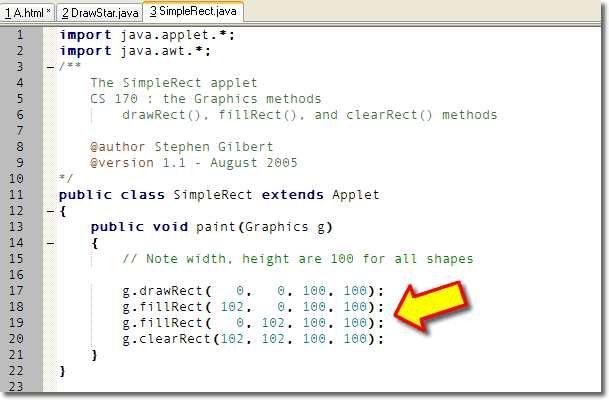
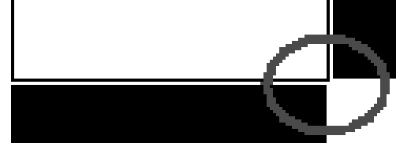
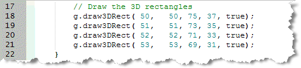
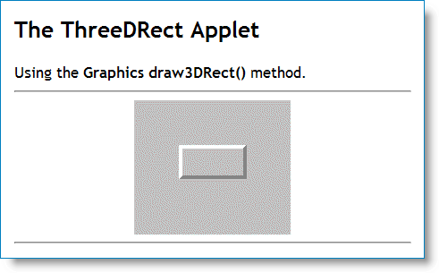
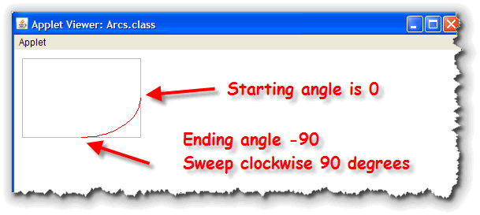
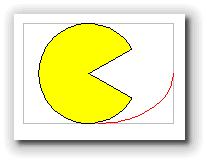
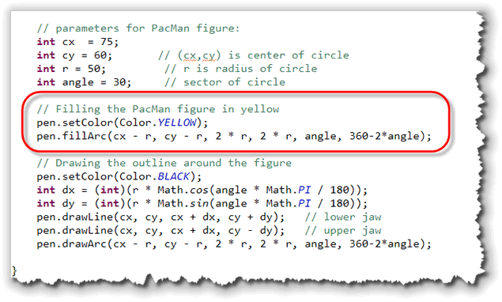

As you look through the Javadocs
for the Graphics class, you can see that it "knows how"
to do a lot of things. However, up until now, you've really only
seen one example: drawing text. To finish up this chapter, we'll look at some of the
Graphics methods for drawing shapes, and
show you several new examples.
In this section you'll learn:
- how to draw simple lines
- how to draw filled and outline rectangles
- how to draw ovals
- how to draw 3D shapes
One "role" of the
Graphics object passed into the paint()
method, is to provide methods that act as "artist's assistants."
These methods draw lines, simple shapes, and complex geometric
patterns. As you'll see later, these assistants know
how to work with JPEGs and GIFs as well.
Before we do that, though, let's take a quick look at the role of the AWT (or Abstract Window Toolkit) and the process of drawing on the screen.
The Graphics Class
When you paint text on the screen, using the drawString() method,
you send your messages to an object named "pen". Who, or
what, exactly, is "pen"? At first glance, it would seem that
the Applet or String classes would be likely
candidates to handle such drawing chores. In fact, however,
neither of them is up to it.
The String class knows all about characters, but it doesn't know anything about the resolution of your video display, or how many pixels are required to draw a "t". For that, you need the services of an expert; in Java, that expert is a member of the Graphics class.
From working with the drawString() method, you
can see that only Graphics objects can draw on the
display of an applet. You might wonder why this is. Why can't
you just tell your computer to paint a red pixel at location
100, 100, without involving some Graphics object?
Let's see!
Who Does What?
In the "old days", back when every computer ran a single program at a time, telling your computer to turn a particular pixel red was a reasonable request. Today, however, it doesn't make much sense at all. Here's why.
As I'm writing this, I have fourteen different applications running
in the foreground. If all fourteen of my applications decided
to paint at location 100, 100 at the same time, chaos would
quickly follow. Obviously, with multiple applications running,
each application cannot treat the display as its own private
resource. Each one has to share with the others. They all have
to agree to abide by the same "contract:

Let's take a look at how the programmer-AWT contract works.Responsibilities of the AWT and the Graphics Class
The key figure in this picture is the AWT (the Abstract Window
Toolkit) and its Graphics object. The Graphics
object acts as a "traffic cop" to make sure your efforts to paint on the display
don't interfere with other programs, or with different parts of
your own program.
It does this in three ways:
- The
Graphicsobject "clips" your drawing region. If you create a drawing area that is 100 pixels square, and you try to paint a bright red circle that extends outside your drawing area, yourGraphicsobject, in effect, holds a "stencil", (called the clipping region) over your drawing area so your efforts don't spill over on your neighbor's area. - The AWT "monitors" your drawing region. If another
application should drag a dialog box over your drawing
area, or if your application should scroll a portion of
your image out of its window, the AWT will "notify" you
when your drawing region needs to be repainted. (It
notifies you by calling your applet's
paint()method. - The AWT "schedules" access to your drawing region, so that
different methods don't end up fighting over the area.
Although you have to write the instructions (inside your
paint()method), that do the actual painting, you can ask the AWT to perform the painting, by calling your applet'srepaint()method. This submits a "work order" with the AWT, letting it know that you'd like to have your applet repainted.
The AWT manages the overall painting process, but it doesn't write the instructions that do the actual painting. That responsibility is up to you.
Inside the Graphics Class
Every Java Component has its own Graphics object.
A copy of that Graphics object (not the original) is
passed to the paint() method when it is
called. When you receive your Graphics object, you're
going to use it for two things:
- The
Graphicsobject provides the environment in which you'll work: your own "painting studio" to speak. There are several methods that allow you to modify that environment. - The
Graphicsobject contains a set of methods that will help you in your actual painting. Think of these as your "painter's apprentice." You can use these methods to do your drawing.
We'll look at the different painting methods shortly. Before we do, though, let's take a quick look at the "environment" part.
The Environment

TheGraphics object contains the "environment" used when
any Java graphical component is drawn. This environment consists of:
- a default
Font, used to display text when you call thedrawString()method. - a default pen color, used when drawing lines or shapes.
- a default background or pen color.
- a default drawing mode.
- a default coordinate system.
The Graphics object that you receive, itself "borrows"
several of these items from the graphical component it represents. A
Graphics object uses its component's foreground property
as its default drawing color, for instance, and the
Graphics coordinate system is relative to the upper-left
corner of its component.
Inside your paint() method you can make
changes to the temporary Graphics copy you receive by
calling the methods in the Graphics class.
For instance, to change the drawing color (assuming your
Graphics object is named pen), you could
write:
pen.setColor(Color.RED);
This doesn't change the "master copy" of the Graphics
object attached to your applet. The default drawing color is still
normally black. As you saw when we discussed the Color class,
you can change the default foreground and background colors for a
graphical object (such as your Applet object), by using
its setBackground() or setForeground()
methods.
Now, let's look at some of the Graphics drawing methods, starting with
the methods that draw lines.
Drawing Lines
The drawLine() method takes four int
parameters, representing the two end-points of a line. Here
is the method signature:
void drawLine(int x1, int y1, int x2, int y2)
The arguments x1,y1 represent the horizontal (x),
and vertical (y) point at one end of the line, while
x2,y2 represent the point at the other end. Since
all four arguments are int, you simply substitute
a whole number for each argument when calling the method.
When you draw lines in Java, all lines are 1 pixel thick, and
use the default Graphics brush color (retrieved
from your component's foreground property). You can change the
color of the brush, used to paint the lines, but you can't
change the thickness of the line.
Java actually can draw fancier lines with
different thicknesses, styles and end-types. To do so, though, you
have to use the Java 2D package and the Graphics2D class,
which is slightly more complex than what I've shown you here. Once
you've learned how to use the simpler Graphics class,
you'll find the Graphics2D much easier to
understand.
The algorithm used to draw lines in Java is inclusive; both
the point x1,y1 and the point x2,y2 are
included in the line. Thus, if you want to draw a single
pixel on the screen—at point 100,100, for instance, you do it
like this:
pen.drawLine(100, 100, 100, 100);
Here's a sequence of drawLine() calls that
creates a five-sided star:
 Here's how it works:
Here's how it works:
- Line 13 starts at 101 pixels in from the left side, (since the first pixel is numbered 0), and 0 pixels down from the top, (on the first line, in other words). It then draws to position 200,200, which is 201 pixels from the left side, and 201 pixels down from the top.
- Line 14 picks up where line 13 left off, that is, at position 200,200. It draws a line from that position, to position 0x, (that is, against the left-hand margin), and 100y, (that is, 101 pixels down from the top).
- Line 15 picks up from there and draws a horizontal line clear across the applet. Not that the "y" parameter for the two end-points is both set to 100. The "x" parameter starts at 0 (the left-hand side), and goes to 200 (the right-hand side).
- Line 16 continues, drawing from the right-hand margin over to the lower-left corner, and line 17 continues that line up to the original starting point at 100,0.
You'll find the source code for the applet in this chapter's source code folder.
Note that when I write the
paint() method, I can call the Graphics
object anything I like; here I've named it bob. You
don't have the same freedom to rename the word
Graphics, or the method name paint(),
however; they both must be spelled exactly as shown.
Drawing Shapes
In addition to lines, the Graphics class knows how to
draw simple geometric shapes, including rectangles, ovals, arcs,
round-cornered rectangles, and polygons.
Many of Java's simple geometric shapes use the principle of a bounding box to specify their location and size. A bounding box is the smallest rectangle that can contain the object you are drawing. This rectangle is known as the shape's bounds:

You specify a bounding box by passingx,y values for
the location of the shape, (that is, the upper-left corner
of the bounding box), along with two additional parameters for
its size: the width (first) and the
height (second). Each of the values used for
the bounding box should be a positive whole number.
Note : Do not supply values for the
lower-right corner when drawing simple shapes. This is easy to forget,
because the drawLine() method does use end-points
(x1,y1 and x2, y2)
rather than width and height, so it's easy to
get them confused.
Drawing Plain Rectangles
There are three methods that allow you to draw, fill, or clear a given rectangle:
drawRect(int x, int y, int width, int height)
fillRect(int x, int y, int width, int height)
clearRect(int x, int y, int width, int height)
Here's how these methods work:
- The
drawRect()method draws a 1-pixel wide outline rectangle that starts atx,y, and goes towidth + 1andheight + 1. With most components, the color of the line is taken from the default foreground color. You can change it at will, of course, by usingGraphics setColor()method. - The
fillRect()method uses the same pen color asdrawRect(), but paints a solid block starting atx,yand extendingwidthandheightpixels. A rectangle drawn withfillRect()will fall one pixel short on the right and bottom, compared to a rectangle drawn withdrawRect(). - The
clearRect()method works exactly likefillRect()except it draws using the component's background color rather than the foreground orGraphicscolor attribute.
Here's the code for a simple applet, SimpleRect.java,
that draws four rectangles. The rectangle in the upper-left
quadrant is created using drawRect(). The rectangles
in the lower-left and upper-right are drawn using
fillRect(), and the rectangle in the lower-right
was drawn using clearRect():

You'll find the source code for the applet in this chapter's code folder. Note that all four rectangles should be 100 pixels high and
100 pixels wide. If you run the applet, however,
and magnify the area in the center of the applet like this:

you'll see that the rectangle created by usingdrawRect() is actually 101 pixels wide and
high. The reason for this is kind of esoteric
(see the note following); just remember that all of the
Graphics drawXXX() methods add one to the height
and width, while the fillXXX() and clearXXX()
methods do not.
Sun's Explanation
Coordinates are infinitely thin and lie between the pixels of
the output device. Operations which draw the outline of a
figure operate by traversing an infinitely thin path between
pixels with a pixel-sized pen that hangs down and to the right
of the anchor point on the path. Operations which fill a figure
operate by filling the interior of that infinitely thin path.

The RandRect Example
RandRect.java is more extensive example program that draws twenty-five random outline rectangles on the left side of the screen, and another twenty-five random filled rectangles on the right.
You'll find the source code in this chapter's code folder so that you can examine it.
Thicker Lines
When the Graphics class draws a "outline-version"
rectangle or oval, it uses a 1-pixel-wide pen, just like the
drawLine() method does. Drawing thicker lines is
fairly difficult, especially if the line is drawn at a slope,
because you have to draw several strokes side-by-side, and
then calculate the differing end-points.
Drawing thicker rectangles (and ovals) is much easier: you simply
use a sequence of drawRect() calls, and each
time you add 1 to x and add 1 to y. In addition, you need to decrease
both the width and height, so that the new rectangle fits snug
inside the existing one. Because you already added one to x and y,
you need to subtract 2 from both width and height.
Here's a fragment that draws a rectangle with a line 3 pixels thick:
pen.drawRect(10, 10, 100, 100);
pen.drawRect(11, 11, 98, 98);
pen.drawRect(12, 12, 96, 96);
If you have a very thick line, though, it can be pretty tedious to
type in a long list of drawRect() calls. In that case,
you can use a combination of fillRect() and clearRect()
to do the same thing.
Here, for instance, is a rectangle with a 10-pixel-wide outline; instead of using ten statements, it uses only two:
pen.fillRect(10, 10, 100, 100); // draw the outline
pen.clearRect(20, 20, 80, 80); // clear the interior
Rounded Rectangles
In addition to the plain old rectangles, the Graphics
class can also draw two fancier rectangles: the rounded
rectangle and the 3D rectangle. Let's take a
quick look at the rounded rectangle first.
There are two methods to draw rounded rectangles: one to draw an
outline and one to draw a filled shape. There is no "clear"
method, but you can easily write your own by setting the
Graphics color using getBackground()
before filling the rectangle.
Here are the rounded rectangle methods:
void drawRoundRect(int x, int y, int width, int height,
int
xArc, int yArc)
void fillRoundRect(int x, int y, int width, int height,
int
xArc, int yArc)
Like plain-old-rectangles, rounded rectangles are specified by
supplying an x,y coordinate along with a
width and height. The outline rounded
rectangles are one pixel higher and wider than their filled
brethren, just as with plain-old rectangles.
Notice though, that the rounded rectangle methods require six
parameters instead of four like the plain rectangles.
The two additional parameters determine how "round" the corners of
each rectangle will be. The value you supply is interpreted as
the diameter of an oval placed against the corner of the bounding
box like this:
 If you use the same values for
If you use the same values for width and
xArc, along with identical values for
height and yArc, you'll end up with
an ellipse. The corners will "consume" all the rectangle portion
of your shape. If all four parameters—width,
height, xArc, yArc—are
the same, then you end up with a circle.
3-D Rectangles
In addition to the regular and rounded rectangles, the
Graphics class has an additional
method for drawing "3D" rectangles:
void draw3DRect(int x, int y, int width, int height,
boolean raised)
Like the rounded rectangles, the 3D variety requires additional
information, in the form of an extra parameter. The last parameter
to the draw3DRect() method, raised, is
a boolean, or true/false value.
When a method takes a boolean
argument like this, just type in the words true or
false, without quotes.
If you pass true to the draw3DRect() method,
the rectangle will "pop out" like a button; if you pass
false, the rectangle will appear sunken. There
are two complications when using draw3DRect():
- Even with 3D rectangles Java draws using a one-pixel pen. If you want to create "deeper" or "higher" rectangles, you need to draw several rectangles, nested inside each other.
- The default foreground and background color, (black and
white), don't allow the 3D effect to work; you have to
change the drawing color and the background color, so
that both are the same. If you do that with other shapes,
you won't be able to see the shape, because the "paper"
color and the "pen" color are identical. With the
draw3DRect()method, it changes the colors of the lines automatically, to create the raised (or lowered) effect.
Let's see how this works.
The ThreeDRect Applet
Here's some more code, this time for an applet, ThreeDRect.java, that draws a 4-pixel thick raised rectangle in the middle of the applet. You'll find the source code for the applet in this chapter's code folder.
There are a couple of new pieces to this applet. First,
since draw3DRect() doesn't work in black and
white, there are two lines that change the drawing color,
and then use fillRect() to erase the background
using light gray:
 The second thing that's new is duplicating (or repeating) the
same statement several times, but just changing the arguments
to get a different effect. In the code shown here:
The second thing that's new is duplicating (or repeating) the
same statement several times, but just changing the arguments
to get a different effect. In the code shown here:

each call todraw3DRect() moves the starting
position down and to the right by one pixel, and then decreases
width and height by two pixels. The
result is a series of decreasing rectangles, each one nested
inside the previous one, giving the illusion of a line that
is 4-pixels thick:
Drawing Ovals
Drawing ovals works almost exactly like drawing plain rectangles. There are two methods:
void drawOval(int x, int y, int width, int height)
void fillOval(int x, int y, int width, int height)
There is no clearOval() method. Each of these draws
an oval that touches an imaginary "bounding box" represented by
coordinates passed as x, y,
width and height.
Thicker Ovals
As with the rectangles, "drawn" ovals are 1-pixel wider and higher than "filled" ovals. Like rectangles, ovals are drawn using a line that is one-pixel wide. You can simulate thicker lines by drawing several ovals, one inside the other.
This scheme is not as effective for ovals as for rectangles, because of the aliasing ("stairstepping" or "jaggies") that occurs as each one-pixel-wide oval is drawn.

A better solution is to draw just two ovals using
fillOval(). Draw the larger oval first, using the
"line" color. Then draw the inside oval using the background
color like this example
pen.fillOval(10, 10, 50, 50);
pen.setColor(getBackground());
pen.fillOval(15, 15, 40, 40);
which draws an oval using a 5-pixel wide brush.
The DrawOvals applet uses both methods to draw a 10-pixel-wide blue oval. As you can see, the line for the oval on the left has several pixilated drop-out sections. Run the applet on your own machine using the source code in this chapter's code folder.
Drawing Arcs
The Graphics class has two method for drawing and
filling arcs:
void drawArc(int x, int y, int w, int h, int start, int end)
void fillArc(int x, int y, int w, int h, int start, int end)
Both methods use the same parameters. The first four specify the bounding box for an imaginary oval. The last two parameters specify the starting and ending angles of the arc in degrees.
Here is some code that draws an arc with a start angle of 0
degrees and an end angle of 270 degrees:
 I've added some code that uses
I've added some code that uses drawRect() to
display the bounding box in a light gray color, just to
help you visualize the process.
Here's what the program looks like as it runs. Notice that
the starting angle is at the "3 o'clock" position, and that
the angles sweep counter-clockwise around 270 degrees:
 Note that the 270 is not the position on the circle,
but the number of degrees "traveled". If we wanted to sweep the
other direction (clockwise), and end up at the same point on
the bounding box, we'd supply a negative number for the
ending position.
Note that the 270 is not the position on the circle,
but the number of degrees "traveled". If we wanted to sweep the
other direction (clockwise), and end up at the same point on
the bounding box, we'd supply a negative number for the
ending position.
Here's the same program using -90 as the ending parameter:

This causes us to sweep clockwise 90 degrees, which is the same point as sweeping counter-clockwise 270 degrees.Filled Arcs

The arc is the only unclosed shape that can be filled in theGraphics class. The fillArc()
method fills the interior of the as if there were lines
drawn to the center of the bounding box.
Here's a Pacman figure painted using fillArc().
Note, though, that the figure is not outlined. To
draw the outline, you have to use drawArc() which
does not draw the closing lines to the radius. To draw
those, you have to use separate drawLine()
statements, along with the appropriate mathematical calculations:

These are fairly straightforward calculations for circles, but can become more complex for other ellipses.
Applet Graphics Summary
The AWT and the Graphics class work together (along with
your operating system) to allow different programs to run at the same
time and share the screen.
- Each graphical component contains a
Graphicsobject with its own clipping region that determines where you can paint. - You will place your instructions inside the
paint()method, but the AWT will schedule the painting when it is necessary. - Each
Graphicsobject contains an environment consisting of things like fonts and drawing colors, and a set of methods that can be used to draw on the display, and those that can be used to modify its environment.
Here are some of the drawing methods discussed in this section.
All of the drawing methods will use a 1-pixel wide pen; the default
component color will be used unless changed by calling Graphics
setColor() before drawing.
- Use
drawLine(x1, y1, x2, y2)to draw a line between two points (including the points themselves). - Use
drawRect(x, y, width, height)to draw the outline of a rectangle. The width and height will be 1 pixel larger than requested. - Use
fillRect(x, y, width, height), orclearRect(x, y, width, height)to paint a solid rectangle. The first uses the foreground color, the second uses the background. The width and height will be as requested. - Use
drawRoundRect(x, y, width, height, xArc, yArc)orfillRoundRect(x, y, width, height, xArc, yArc)to paint a rectangle with rounded corners. - Use
draw3DRect(x, y, width, height, raised)to draw a rectangle with a 3D effect. Passtrueas the last parameter for a raised effect, andfalsefor a sunken rectangle. The effect doesn't work for all background and foreground colors. Also, to get a larger effect, you need to repeat the code several times, changing the parameters. - You can paint ovals by using the
drawOval(x, y, width, height)andfillOval(x, y, width, height)methods. - You can paint arc segments using
drawArc(x, y, width, height, start-angle, sweep-degrees), and create pie slices usingfillArc(x, y, width, height, start-angle, sweep-degrees). The first four arguments represent the bounding box (as with the other shapes). The last two represent the starting angle (with 0 being 3 o'clock) and the number of degrees to sweep around the circle. A negative sweep-degrees goes clockwise, positive goes counter-clockwise: